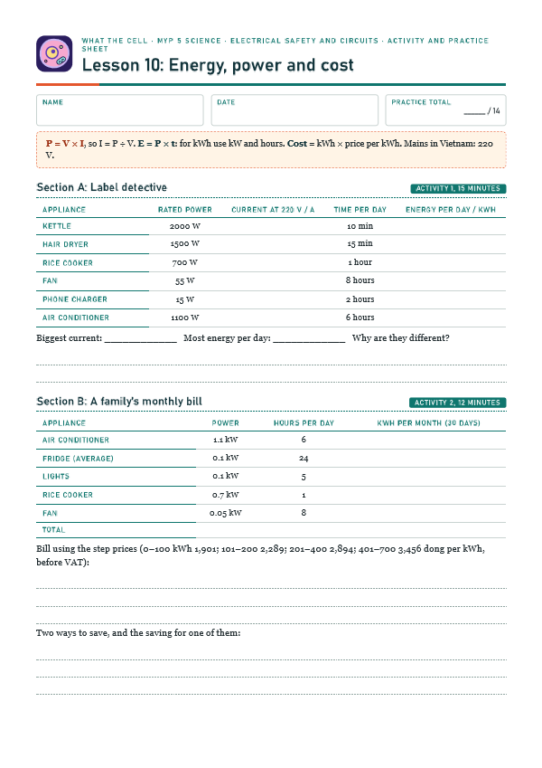

By the end of the lesson you can
- Define power and state its unit
- Use P = V × I and E = P × t
- Calculate energy in kilowatt-hours and its cost
- Read an appliance rating plate and work out its current
Keys: arrows or a presentation clicker move the slides, F for full screen. Slides with a red dot have a video or simulation.
Videos (all 5 minutes or less)
- 3:19
Energy use in electrical appliances
FuseSchool. Power ratings, energy = power × time and the kilowatt-hour. Slide 9.
- 3:36
Power stations and the national grid
FuseSchool. Where your electricity comes from and how it reaches your home. Slide 7.
Simulations
- Lab
Home Safety Lab: power and cost
What the Cell. Switch kitchen appliances on and off and watch the total power, current and cost per hour; find out when the breaker trips.
- PhET
Circuit Construction Kit: DC
PhET, University of Colorado Boulder. Measure V and I for a bulb and calculate its power.
Print and practise

Activity and practice sheet
Used in the lesson’s activities, with practice questions. Your teacher has the answers.
Download (PDF)Lesson 10 slides
All 22 slides in one file, to read again or print. The video buttons on the slides open YouTube.
Download the slides (PDF)Revising? The Revision tab on the unit page has the unit notes and review.
Class activity pack
Everything to print for the lesson’s activities: picture cards, sorting mats, station cards with their kit lists, and the teacher’s set-up notes. Print it before class.
Download the activity pack (PDF)Notes: Energy, power and cost
Power
Power is the rate of transferring energy, measured in watts (W): 1 W = 1 joule per second. 1 kW = 1000 W. A 2000 W kettle transfers 2000 J every second.
P = V × I
Electrical power = p.d. × current. Rearranged, I = P / V gives the current an appliance takes from the 220 V mains: a 2000 W kettle takes about 9.1 A.
E = P × t
Energy = power × time. In joules use W and seconds. For electricity bills use the kilowatt-hour (kWh): kW × hours. 1 kWh = 3.6 million J.
Cost
Cost = energy in kWh × price per kWh. In Vietnam the price per kWh rises in steps as a home uses more, which encourages saving energy.
Power is not energy
A powerful appliance used briefly can use less energy than a low-power one used for hours. Air conditioners are usually the biggest users at home.
Rating plates
The rating plate shows the voltage, frequency and power. Use it to work out the current, which tells you the fuse, socket and cable the appliance needs.
Key words
| power (P) | the rate of transferring energy, in watts (W) |
|---|---|
| watt (W) | 1 joule per second; 1 kW = 1000 W |
| P = V × I | power (W) = p.d. (V) × current (A) |
| E = P × t | energy = power × time |
| kilowatt-hour (kWh) | the energy a 1 kW appliance uses in 1 hour; 3.6 million J |
| rating plate | the label showing an appliance's voltage and power |
| tariff | the price of electricity per kWh |